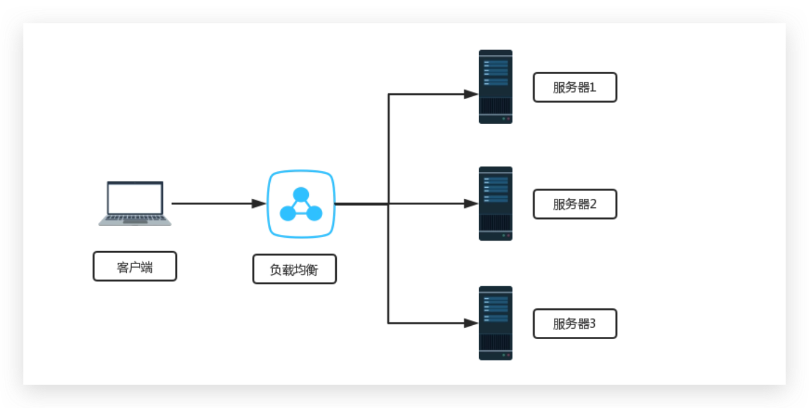

Nginx
本文最后更新于 2024年3月28日 晚上
使用平台: CentOS7
使用工具: VmWare17、xftp7、OpenSSH_for_Windows_8.1
# CentOS 配置
# 静态 IP
# VWare 配置
进入 Vmware，在最上方标签栏中找到 编辑 -> 虚拟网络编辑器，进入网卡配置界面，如下图：
点击更改设置标签，如下图：
首先选择 VMnet8 网卡，再点击下方 NAT 设置，如下图：
记住弹出对话框中的子网 IP、子网掩码、网关。随后启动虚拟机
# 虚拟机设置
使用命令 vi /etc/sysconfig/network-scripts/ifcfg-ens33 编辑 ens33 网卡设置文件：
1 | |
编辑完成后，使用 : + wq + 回车 保存并退出。
使用 systemctl restart network 重启网络。
尝试使用 ping 或者 curl 命令来判断配置是否成功，例如：
1 | |
若使用 ping 命令，出现下图，则代表网络畅通，配置成功：
[!Note]
注意：linux 的 ping 命令没有次数限制，需要使用 ctrl+c 来进行强制停止
若使用 curl 命令，出现下图，则代表网络畅通，配置成功：
# 配置 yum 镜像源
本文使用的是阿里云 yum 镜像源
首先使用 yum 命令下载 wget 工具：
1 | |
接着前往 /etc/yum.repos.d ，备份所有仓库文件：
1 | |
随后拉取阿里云 yum 源镜像仓库：
1 | |
# Nginx 学习
# 编译安装 Nginx
前往官网下载 Nginx，Nginx 官网 ---- 下载，选择适合 Linux 操作系统平台的版本，点击下载，如下图：
通过 ftp 工具，将该文件上传至虚拟机中。
首先将压缩包放在一边。编译安装 nginx 需要一些前置的环境：
1 | |
前置环境配置完成后，解压 Nginx 压缩包
1 | |
解压缩后的文件目录如下图：
其中 configure 即为我们需要的编译文件，执行以下命令进行编译：
1 | |
解压成功后，会自动在当前目录生成 Makefile 文件：
随后执行如下命令进行编译安装：
1 | |
出现下图即代表安装完成：
随后即可以前往之前设定的目录 /usr/local/nginx 查看安装完成的 Nginx。
# Nginx 目录
Nginx 的目录如下所示：
1 | |
# Nginx 的常用命令
1 | |
# 尝试启动 Nginx 服务
执行以下命令：
1 | |
随后前往浏览器访问 <你的虚拟机IP>:80 或者在虚拟机中输入 curl localhost:80 ，出现如下所示图片，即代表启动成功：
# 配置 Nginx 为系统服务
使用 vi 命令编辑，位于 /lib/systemd/system 的 nginx.service 文件：
1 | |
输入以下内容：
1 | |
编辑完成后，保存退出，重启 Systemd。
1 | |
# 通过 sytemctl 控制 Nginx
1 | |
通过 systemctl 启动 nginx，注意：启动前请停止之前启动过的 nginx。随后查看 nginx 的状态，如下图所示则启动成功。
现在也可以在外部访问 nginx 服务器。
[!Tip]
若启动失败，尝试关闭 selinux。尝试运行命令：
setenforce 0
# Nginx 的工作模型
如下图为 Nginx 的工作模型。启动 Nginx 后会启动两个进程：Master 和 Worker。Master 为主进程，用来管理 worker，Worker 是子进程，接受网络请求和响应。
Master 启动时会读取配置文件并校验有无语法错误，随后开启子进程。
当 Worker 收到请求后，会解析请求，读取配置文件进行路径映射，加载请求的资源。
# Nginx 配置
# Nginx 的最小配置文件
1 | |
# sendfile
开启 sendfile。nginx 将会向网络接口发送信号，让其读取文件，直接发送。
关闭 sendfile。nginx 将会自己读取磁盘文件，加载到应用程序的内存中，然后将文件发送给网络接口，网络接口将文件返回。此过程将会有内核态和用户态之间的转换，降低性能。
# 权限控制
访问控制是网络安全防范和保护的主要策略，其任务是保证网络资源不被非法访问。 Nginx 作为 Web 服务器的后起之秀，也提供了访问控制的功能。它可以根据实际需求，对用户可以访问和禁止的目录进行限制。下面将对 Nginx 提供的权限控制指令以及典型的应用进行详细讲解。
Nginx 中提供了两个用于配置访问权限控制的指令，分别为 allow 和 deny 。从其名称就可以看出， allow 用于设置允许访问的权限、 deny 用于设置禁止访问的权限。在使用时，权限指令后只需跟上允许或禁止的 IP 段或 all 即可。其中， all 表示所有的。
[!Note]
权限控制指令的使用虽然简单，但是在设置的过程中，还需要特别注意以下几个点。
- 单个
IP指定作用范围最小，all指定作用范围最大。- 同一块下，若同时存在多个权限指令 (
deny、allow)，则先出现的访问权限设置生效，并且会对后出现的设置进行覆盖，未覆盖的范围依然生效，否则以先出现的设置为准。- 当多个块 (如
http、server、location) 中都出现了权限设置指令，则内层块中的权限级别要比外层块中设置的权限级别高。- 默认访问权限为：
allow all
# 拒绝或允许所有人
1 | |
[!Note]
注意，
deny all将会把包括自己在内的访问者全部拒绝。
# 允许指定用户访问
1 | |
上述指令表示只允许
192.168.9.3客户端访问，其他所有客户端都不能访问。需要注意的是，若省略此处的deny all，则会允许所有客户端访问；若将deny all移动到allow 192.168.9.3之后，则会阻止所有客户端访问。同一个块下的两个权限指令，先出现的设置会覆盖后出现的设置，使得
allow 192.168.78.128的配置优先生效；同时deny指令设置的访问范围all较大未被allow覆盖的范围配置依然生效，达到除了IP为192.168.78.128的用户外，禁止其他用户对服务器访问的效果。
# 允许指定网段的用户访问
1 | |
# 拒绝指定用户访问
1 | |
# 拒绝指定网段用户访问
1 | |
# location 模块
location 块用于匹配 URI ，同时进行一些访问控制、权限控制、负载均衡、反向代理等功能。
# location 的匹配语法
在此之前，首先要简单了解一下 location 的相关语法及规定，具体如下：
1 | |
[!Note]
在上述语法中 =、~、~*、^~ 和 @都是
location用于实现访问控制的前缀，且在使用时只能选择一种，当然也可以不设置前缀。其中，关于 location 前缀的含义如下表所示。
URI 表示 URL 地址中从域名到参数之间的部分，{...}表示指令块，用于满足location匹配条件后需要执行的指令。
| 前缀 | 说明 |
|---|---|
| = | 根据其后的指定模式进行精准匹配。例如，在访问时要与 /html/aaa/index.html 完全一致才会执行其后的指令块 |
| ~ | 使用正则表达式完成 location 的匹配，区分大小写 |
| ~** | 使用正则表达式完成 location 的匹配，不区分大小写 |
| ^~ | 不使用正则表达式，完成以指定模式开头的 location 匹配 |
| @ | 用于定义一个 location 块，且该块不能被外部客户端所访问，只能被 Nginx 内部配置指令所访问 |
[!Note]
根据上表的描述可将
location根据不同前缀的使用方式，大致分为普通location和正则location。其中，~和~*属于正则location，其余的前缀和没有前缀的情况都属于普通location。
# 精确匹配
所谓精准匹配指的就是用户访问的 URI 与指定的 URI 完全一致的情况，才会执行其后的指令块
服务器位于 192.168.9.5 ，有 192.168.9.3 和 192.168.9.4 两个用户进行访问，示例配置如下：
1 | |
响应结果如下：
| URL | 192.168.9.3 | 192.168.9.4 |
|---|---|---|
| http://192.168.9.5 | 403 Forbidden | 403 Forbidden |
| http://192.168.9.5/js | 404 Not Found | 403 Forbidden |
| http://192.168.9.5/admin/auth | 403 Forbidden | 404 Not Found |
| http://192.168.9.5/admin | 403 Forbidden | 403 Forbidden |
# 正则匹配
Nginx 配置文件中，多个正则 location 之间按照正则 location 在配置文件中的书写顺序进行匹配，且只要匹配成功就不会继续匹配后面定义的正则 location 。
1 | |
响应结果如下：
| URL | 响应结果 |
|---|---|
| http://192.168.9.5/test.html | 404 Not Found (匹配了第 1 行 location) |
| http://192.168.9.5/aaa/test.html | 404 Not Found (匹配了第 1 行 location) |
[!Tip]
精确匹配和
^~匹配会禁用正则匹配
# 最大前缀匹配
由于 location 可以同时定义多个，当一个配置文件中同时出现多个 location 时，普通 location 之间遵循最大前缀匹配原则。通俗地讲就是，匹配度最高的 location 将会执行。
示例如下：
1 | |
响应结果如下：
| URL | 响应结果 |
|---|---|
| http://192.168.9.5/ng.test/data | 404 Not Found (匹配了第 1 行 location) |
| http://192.168.9.5/ng.test/log | 403 Forbidden (匹配了第 4 行 location) |
| http://192.168.9.5/ng.test/log/data | 403 Forbidden (匹配了第 4 行 location) |
[!Tip]
location \ {...}：遵守普通 location 的最大前缀匹配，由于任何 URI 都必然以 **/** 根开头，所以对于一个 URI, 若配置文件中有更合适的匹配则会将其替代，否则返回location \ {...}匹配到的结果，它相当于站点默认配置。
location =\ {...}：遵守的是精准匹配，也就是只能匹配该站点根目录，同时会禁止继续搜索正则location, 效率比location \ {...}要高。因此，若在开发中能确定精准匹配的情况，可以采用
location =\ {...}的方式，提升匹配效率。
[!Note]
当多种类型的 location 匹配同时出现时；最终执行结果为：
=匹配 >^~匹配 > 正则匹配 > 普通的最大前缀匹配只要优先的
location匹配成功，就不会执行其他的location。
# 虚拟主机配置
虚拟主机为配置文件中的 server 块。匹配到第一个虚拟主机，则停止匹配。
# 基于端口的虚拟主机配置
在 nginx.conf 添加如下配置：
1 | |
重新加载 nginx 主配置文件。
1 | |
重新访问即可进入不同的页面。
# 基于 server_name 的虚拟主机配置
server_name 的匹配顺序为：准确 > 开头通配符 > 结尾通配符 > 正则表达式。
# 准确
1 | |
# 开头通配符
1 | |
# 结尾通配符
1 | |
# 正则表达式
1 | |
# 代理
如果两方无法正常通信。那么可以使用 代理，通过访问代理服务器，让代理服务器去访问之前无法访问的主机。
# 正向代理
正向代理可以理解为「客户端」的代理，即客户端主动提供代理服务，客户端知道代理服务器的存在。
# 反向代理
反向代理可以理解为「服务器」的代理，即服务器端主动提供代理服务，客户端不知道代理服务器的存在。
# Nginx 反向代理
如下图所示， Nginx 服务器接入公网，可以被外界访问，真正的业务服务器，外界无法访问。业务服务器的进出都要通过 Nginx 服务器，如果 Nginx 服务器的带宽不够高，将导致性能瓶颈。此谓， Nginx 代理的隧道模型
另一种模型为
DR模型，进则经过代理服务器，出则直接通向网关。
Nignx 的反向代理通过关键字「 proxy_pass 」实现。「 proxy_pass 」要在 location 块中使用。如下所示：
1 | |
[!Note]
可能出现：
proxy_pass中的域名，如果去掉二级域名，可能会导致重定向。此时并不是反向代理未成功。而是因为网站设计人员可能会让无www二级域名的请求重定向至含有www二级域名的网址。同时，若访问的请求是 http 协议，那么也可能发生重定向。重定向至 https 协议。原因也是网站设计带来的问题。
额外的参数：
| 指令 | 说明 |
|---|---|
| proxy_set_header | 在将客户端请求发送给后端服务器之前，更改来自客户端的请求头信息 |
| proxy_connect_timeout | 配置 Nginx 与后端代理服务器尝试建立连接的超时时间 |
| proxy_read_timeout | 配置 Nginx 向后端服务器组发出 read 请求后，等待响应的超时时间 |
| proxy_send_timeout | 配置 Nginx 向后端服务器组发出 write 请求后，等待响应的超时时间 |
| proxy_redirect | 用于修改后端服务器返回的响应头中的 Location 和 Refresh |
# 负载均衡
把请求，按照一定算法规则，分配给多台业务服务器（即使其中一个坏了 / 维护升级，还有其他服务器可以继续提供服务）。
Nginx 的负载均衡通过， upstream 和 proxy_pass 配合使用。
[!Note]
注意，
upstream和server一个级别
# 轮询
雨露均沾，所有配置的服务器轮换着被访问。
1 | |
[!Note]
轮询为
Nginx的默认负载均衡策略
upstream 有如下常用状态参数：
| 指令 | 说明 |
|---|---|
| fail_timeout | 与 max_fails 结合使用。 |
| max_fails | 设置在 fail_timeout 参数设置的时间内最大失败次数，如果在这个时间内，所有针对该服务器的请求都失败了，那么认为该服务器会被认为是停机了 |
| fail_time | 服务器会被认为停机的时间长度，默认为 10s。 |
| backup | 标记该服务器为备用服务器。当主服务器停止时，请求会被发送到它这里。 |
| down | 标记服务器永久停机了。 |
[!Note]
在轮询中，如果服务器 down 掉了，会自动剔除该服务器。
缺省配置就是轮询策略。
此策略适合服务器配置相当，无状态且短平快的服务使用
# 加权轮询
通过 weight 实现，权重大的访问会更多。
1 | |
[!Tip]
轮询是一种无状态的轮询策略，无法保证
session一致。
# ip_hash
同一个来源的 IP 指向一个服务器。
1 | |
[!Note]
需要注意的是，在使用
ip_hash方式处理负载均衡时，Web 服务器在负载均衡列表中的状态不能使用weight和backup设置。
[!Tip]
值得一提的是，由于
ip_hash方式为每一个用户IP绑定了一个Web服务器处理，将会导致某些Web服务器接收的请求多，某些Web服务器接到的请求少，无法保证Web服务器的负载均衡。因此，建议只在必要的情况下使用这种方式。同时，ip_hash可以用来处理有状态的请求。
# url_hash
同一个来源的 URL 指向一个服务器。
# leat_connection
把请求转发给连接数较少的后端服务器。需要第三方的组件
# fair
根据后端服务器相应时间进行分配。需要第三方的组件。